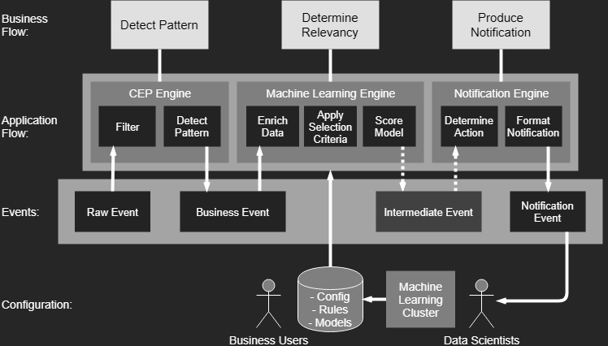

Fast data with the
KFC stack
Bas Geerdink | July 17, 2019 | O'Reilly OSCon
Who am I?
{
"name": "Bas Geerdink",
"role": "Technology Lead",
"company": "ING Bank",
"background": ["Artificial Intelligence",
"Informatics"],
"mixins": ["Software engineering",
"Architecture",
"Management",
"Innovation"],
"twitter": "@bgeerdink",
"linked_in": "bgeerdink"
}
Big Data
- Volume
- Variety
- Velocity
Fast Data Use Cases
| Sector | Data source | Pattern | Notification |
|---|---|---|---|
| Marketing | Tweets | Trend analysis | Actionable insights |
| Finance | Payment data | Fraud detection | Block money transfer |
| Insurance | Page visits | Customer is stuck in form | Chat window |
| Healthcare | Patient data | Heart failure | Alert doctor |
| Traffic | Cars passing | Traffic jam | Update route info |
| Internet of Things | Machine logs | System failure | Alert to sys admin |
| Gaming | Player actions | Key combos | Action on screen |
Fast Data Pattern
The common pattern in all these scenarios:- Detect pattern by combining data (CEP)
- Determine relevancy (ML)
- Produce follow-up action
Architecture
The KFC stack
- Data stream storage: Kafka
- Stream processing: Flink
- Persisting rules, models, and config: Cassandra
- Model scoring: PMML and Openscoring.io
Deep dive part 1

Flink-Kafka integration
- A Fast Data application is a running job that processes events in a data store (e.g. Kafka)
- Jobs can be deployed as ever-running pieces of software in a cluster (e.g. Spark, Flink)
- The basic pattern of a job is:
- Connect to the stream and consume events
- Group and gather events (windowing)
- Perform analysis on each window
- Write the result to another stream (sink)
Hello speed!
def getData(env: StreamExecutionEnvironment): DataStream[MyEvent] = {
// create schema for deserialization
val readSchema = KafkaSchemaFactory.createKeyedDeserializer
(readTopicDef, rawEventFromPayload)
// consume events
val rawEventSource = new FlinkKafkaConsumer010[BaseKafkaEvent]
(toStringList(readTopicDef), readSchema, props)
// connect to source and handle events
env.addSource(rawEventSource)
.filter(_.isSuccess) // deserialize must succeed
.flatMap(event => doSomething(event))
.addSink(writeToOutputStream)
}
Parallelism
- To get high throughput, we have to process the events in parallel
- Parallelism can be configured on cluster level and on job level
- On cluster level: set the number of task slots (servers) per job
- On job level: distribute the data by grouping on a certain data field
Windows
- In processing infinite streams, we usually look at a time window
- A windows can be considered as a bucket of time
- There are different types of windows:
- Sliding window
- Tumbling window
- Session window
Windows

Window considerations
- Size: large windows lead to big state and long calculations
- Number: many windows (e.g. sliding, session) lead to more calculations
- Evaluation: do all calculations within one window, or keep a cache across multiple windows (e.g. when comparing windows, like in trend analysis)
- Timing: events for a window can appear early or late
Windows
// in: (word, count)
// out: (timestamp of end of window, word, count), key (word), window
class WordCountWindowFunction extends
WindowFunction[(String, Int), WordCount, String, TimeWindow] {
def apply(key: String,
window: TimeWindow,
input: Iterable[(String, Int)],
out: Collector[WordCount]): Unit = {
val count = input.count(_ => true)
out.collect(WordCount(window.getEnd, key, count))
}
}
Event time
- Events occur at certain time ⇛ event time
- ... but arrive a little while later ⇛ ingestion time
- ... and are processed even later ⇛ processing time

Out-of-orderness

Event time
env.addSource(rawEventSource)
.filter(_.isSuccess) // deserialize must succeed
.assignTimestampsAndWatermarks(
new TimedEventWatermarkExtractor)
.flatMap(event => doSomething(event))
.addSink(writeToOutputStream)
class TimedEventWatermarkExtractor
extends AssignerWithPeriodicWatermarks[TimedEvent]() {
// specify the event time
override def extractTimestamp(element: TimedEvent,
previousElementTimestamp: Long): Long = {
// set event time to 'eventTime' field in events
element.eventTime.getMillis
}
override def getCurrentWatermark: Watermark = ???
}
Watermarks
- Watermarks are timestamps that trigger the computation of the window
- They are generated at a time that allows a bit of slack for late events
- By default, any event that reaches the processor later than the watermark, but with an event time that should belong to the former window, is ignored
- It's possible to allow late events to trigger re-computation of a window by setting the allowedLateness property
Event Time and Watermarks
class TimedEventWatermarkExtractor
extends AssignerWithPeriodicWatermarks[TimedEvent]() {
// specify the event time
override def extractTimestamp(element: TimedEvent,
previousElementTimestamp: Long): Long = {
// set event time to 'eventTime' field in events
element.eventTime.getMillis
}
// this method is called to emit a watermark every time the
// ExecutionConfig.setAutoWatermarkInterval(...) interval occurs
override def getCurrentWatermark: Watermark = {
// one second delay for processing of window
new Watermark(System.currentTimeMillis() - 1000)
}
}
Exactly-once processing
- An event has three possible statuses:
- Not processed (in cache on the message bus)
- In transit (picked up by a job, in a window) = state
- Processed (handled by the job)
- Kafka knows for each consumer which data has been read: offset
- Flink has checkpoints that allow to replay the stream in case of failures
- This combination guarantees that an event goes through the system exactly once
Savepointing and checkpointing
- A checkpoint is a periodic dump to a file on disc of the in-memory state
env.enableCheckPointing(10000) // checkpoint every 10 seconds
- A savepoint is a manual checkpoint
- The state dumps can be used for recovery and replay
# Supported backends: jobmanager, filesystem, rocksdb
#
state.backend: filesystem
Deep dive part 2

PMML
- PMML is the glue between data science and data engineering
- Data scientists can export their machine learning models to PMML (or PFA) format
from sklearn.linear_model import LogisticRegression
from sklearn2pmml import sklearn2pmml
events_df = pandas.read_csv("events.csv")
pipeline = PMMLPipeline(...)
pipeline.fit(events_df, events_df["notifications"])
sklearn2pmml(pipeline, "LogisticRegression.pmml", with_repr = True)
PMML

Model scoring
- By applying a map function over the events we can apply functions that process/transform the data in the windows
- For example:
- enrich each business event by getting more data
- filtering events based on selection criteria (rules)
- score a machine learning model on each event
- write the outcome to a new event / output stream
Openscoring.io
def score(event: RichBusinessEvent, pmmlModel: PmmlModel): Double = {
val arguments = new util.LinkedHashMap[FieldName, FieldValue]
for (inputField: InputField <- pmmlModel.getInputFields.asScala) {
arguments.put(inputField.getField.getName,
inputField.prepare(customer.all(fieldName.getValue)))
}
// return the notification with a relevancy score
val results = pmmlModel.evaluate(arguments)
pmmlModel.getTargetFields.asScala.headOption match {
case Some(targetField) =>
val targetFieldValue = results.get(targetField.getName)
case _ => throw new Exception("No valid target")
}
}
}
Wrap-up
- There are plenty of streaming analytics use cases, in any business domain
- The common pattern is: CEP → ML → Notification
- Pick the right tools for the job; Kafka and Flink are amongst the best
- Be aware of typical streaming data issues: late events, state management, windows, etc.
Thanks!
Read more about streaming analytics at:
Source code and presentation are available at: